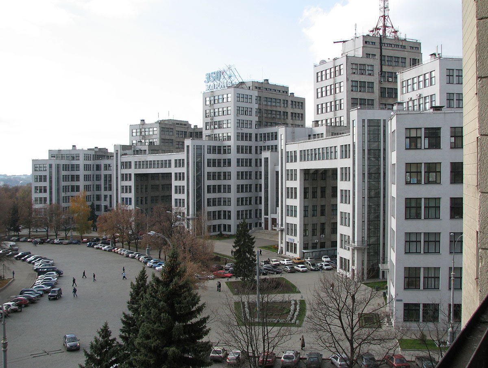

7 чудес Харькова. Экскурсия-игра
|
Знаете ли вы 7 чудес Харькова и сможете ли их найти? Великолепную семерку возглавил Дом государственной промышленности (Госпром), следом - Успенский собор, памятник Т. Шевченко, Благовещенский собор, Зеркальная струя, "Дом со шпилем" и Покровский собор. Экскурсию - игру можно начать или завершить на площади Бекетова, где собраны макеты этих шедевров. Победителей викторины ждут сюрпризы. При желании и наличии времени возможно посещение любых объектов (например, музея НЛО, музея театра кукол, морского музея, планетария, стадиона "Металлист", аквапарка "Джунгли", дельфинария и т.д.) Новинкой этого сезона является предложение завершить экскурсию мастер-классом по hand made - изготовлению самых разных украшений, бижутерии из подручных материалов. Ведь самое главное чудо Харькова - это его мастеровитые, добрые, прекрасные люди Длительность тура - 4 часа Транспорт - автобус |
|
|  | Переход на главную Ознакомиться с ценами можно здесь Вернуться к списку экскурсий |